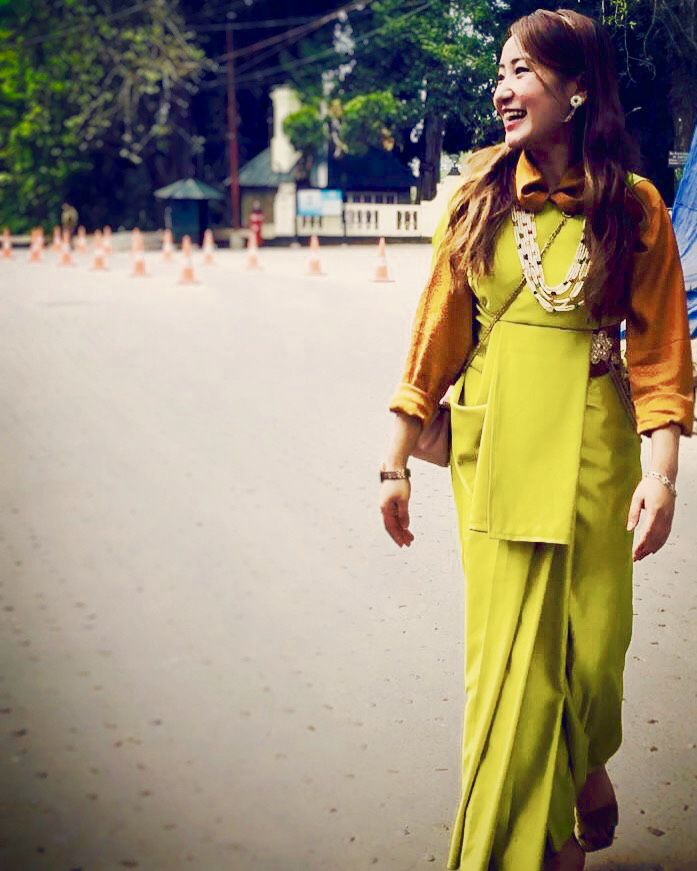

An eminent geographical indication, Lepcha saree find their home in the state of Sikkim.
The Lepcha people of Sikkim, India, traditionally weave fabric using yarn spun from the stinging nettle plant, also known as sisnu. This tradition is said to date back to ancient times. The Lepcha fabric is known for its intricate, colorful motifs arranged in vertical stripes, and is woven on a back-strap loin loom, resulting in a short fabric width. Today, cotton and wool yarns are more commonly used
Lepcha sarees, also known as thara, are woven on small, vertical looms with a backstrap device. The looms are versatile and can be used to weave any pattern or design. The fabric is characterized by colorful motifs arranged in a vertical striped pattern
